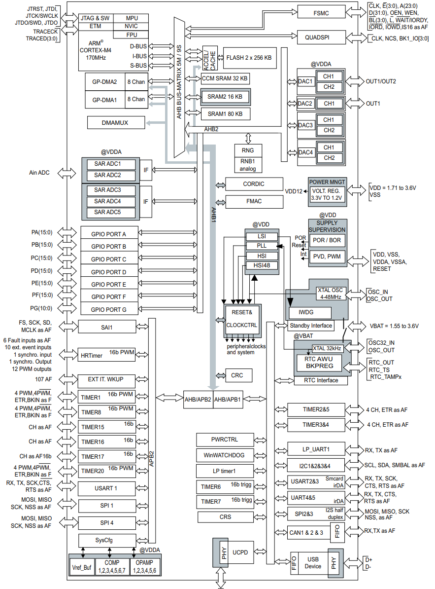
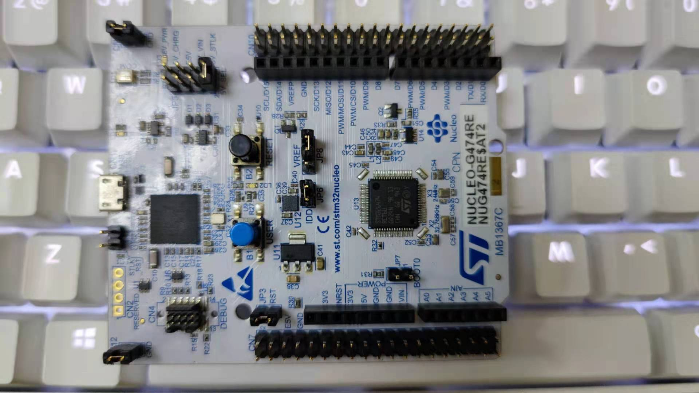
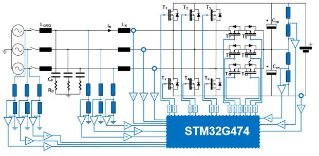

STM32G474¶
GitHub : Cortex-M4 170MHz FSMC CAN-FD 15MSPS-DAC 4MSPS-ADC UCPD HRTIM AES256
Xin简介¶

规格参数¶
内嵌数学运算加速器，丰富的数模外设，运放、比较器、DA、AD等，带有双安全存储区域，ART加速提高Flash读取运行速度。支持FPU和DSP指令，以及3种不同的硬件加速器： ART Accelerator™、CCM-SRAM程序执行加速器、以及数学运算加速器。
基本参数¶
发布时间：2019年5月
参考价格：
制程工艺：
供货周期：
封装规格：LQFP48/LQFP64/LQFP100/LQFP128
运行环境：-40°C to +85°C/125°C
RAM容量：128 KB
Flash容量：128/256/512 KB

特征参数¶
芯片架构¶
电源参数¶
供电电压：1.71 to 3.6 V
HRTIM¶
继承自STM32F334xx系列的高分辨率定时器HRTIM外设，在G4系列更高的主频下可以到达 184ps 分辨率,易于编程实现的简单高分辨率执行流程（等同于4.6 GHz的定时器）
性能分析¶
Xin选择¶
该系列是2012年推出的STM32F3系列的延续，它继承了很多STM32F3的理念和基因，带来更强劲的性能和数模效果。
STM32G4系列最高工作温度可达到125°C，具有更强的抗电气干扰能力，可耐受4kV以上的瞬变电压，增强的可靠性也进一步扩展了其应用范围，特别是一些工业领域。
STM32G4x4系列具有高分辨率定时器和复杂波形生成器，以及事件处理器，这使其特别适合于数字电源应用，如数字开关电源、照明、焊接、太阳能和无线充电等。
品牌对比¶
在模拟外设集成度和技术指标上，国内尚没有可以媲美的产品。
系列对比¶
STM32G4与STM32F3系列高度兼容，作为后者的升级选项，确保在设计不同性能等级的衍生应用时提供卓越的效率。

STM32G474在STM32G4系列中定位高分辨率，独有复杂波形生成器和事件处理器HRTIM，该功能继承自STM32F334，除该功能外，在G4系列中可选STM32G473系列，如果没有FSMC需求且对模拟外设数量要求不多，可选更高性价比的 STM32G431
Mark |
RAM |
Flash |
UART |
BLE |
USB |
Ethernet |
|
|---|---|---|---|---|---|---|---|
型号对比¶

Note
STM32G474、STM32G484型号共有24种封装规格，全系标配128KB RAM，存储器范围为128KB到512 KB，封装为48到128引脚。该系列拥有STM32系列中数量最多的12bit ADC= 42通道
必选理由¶
相对 STM32H730 等高性能产品，最多集成有5个独立高性能ADC，适合用于数据采样场景，但是芯片本身的性能不是特别够，所以在需要4个独立ADC高性能MCU的场景，不如使用STM32H7系列产品。
就规格配置而言，STM32G474 降配方案为 STM32G431 , 后者的相应资源数量更少，封装和存储规格也更小，特别是LQFP32的封装是其独有的。
Xin应用¶
开发工具¶
使用STM32芯片最直接方式是通过 stm32cube 工具构建基本运行体，不用开发者自己去研究寄存器初始化相应外设（但请注意使能）。
使用ARM在线平台 MBED 支持NUCLEO-G474RE开发板的构建开发。
源圈OS-Q通过先验证的方式，集成了更多可信赖资源 PlatformIO STM32G4 可以作为一个启动模板，作为一个开源编译体系便于多系统下开发。
硬件平台¶
NUCLEO-STM32G474RE¶
外设使用¶
HRTIM¶

HRTIM控制PWM输出
/* --------------------- 定时器 D 初始化 ------------------------ */
/* TIMD 计数器工作于连续模式，发生 REP 事件时使能预加载 */
HRTIM1->sTimerxRegs[HRTIM_TIMERINDEX_TIMER_D].TIMxCR =
HRTIM_TIMCR_CONT + HRTIM_TIMCR_PREEN + HRTIM_TIMCR_TREPU;
/* 周期设置为 100kHz， CMP1 设置为周期的 25%， CMP2 设置为周期的 75% */
HRTIM1->sTimerxRegs[HRTIM_TIMERINDEX_TIMER_D].PERxR = _100KHz_PERIOD;
HRTIM1->sTimerxRegs[HRTIM_TIMERINDEX_TIMER_D].CMP1xR = _100KHz_PERIOD/4;
HRTIM1->sTimerxRegs[HRTIM_TIMERINDEX_TIMER_D].CMP2xR = (3*_100KHz_PERIOD)/4;
/* TD1 输出，在 TIMD 周期下置位，在 TIMD CMP1 事件下复位 */
HRTIM1->sTimerxRegs[HRTIM_TIMERINDEX_TIMER_D].SETx1R = HRTIM_SET1R_PER;
HRTIM1->sTimerxRegs[HRTIM_TIMERINDEX_TIMER_D].RSTx1R = HRTIM_RST1R_CMP1;
/* TD2 输出，在 TIMD CMP2 下置位，在 TIMD 周期事件下复位 */
HRTIM1->sTimerxRegs[HRTIM_TIMERINDEX_TIMER_D].SETx2R = HRTIM_SET2R_CMP2;
HRTIM1->sTimerxRegs[HRTIM_TIMERINDEX_TIMER_D].RSTx2R = HRTIM_RST2R_PER;
/* --------------------- 定时器 A 初始化 ------------------------ */
/* TIMA 计数器工作于连续模式，预分频器 = 010b ( 除 以 4) */
/* 在 REP 事件下使能预加载 */
HRTIM1->sTimerxRegs[HRTIM_TIMERINDEX_TIMER_A].TIMxCR = HRTIM_TIMCR_CONT
+ HRTIM_TIMCR_PREEN + HRTIM_TIMCR_TREPU + HRTIM_TIMCR_CK_PSC_1;
/* 设置周期为 33kHz，且占空比为 25% */
HRTIM1->sTimerxRegs[HRTIM_TIMERINDEX_TIMER_A].PERxR = _33KHz_PERIOD;
HRTIM1->sTimerxRegs[HRTIM_TIMERINDEX_TIMER_A].CMP1xR = _33KHz_PERIOD/4;
HRTIM1->sTimerxRegs[HRTIM_TIMERINDEX_TIMER_A].CMP2xR = _33KHz_PERIOD/2;
HRTIM1->sTimerxRegs[HRTIM_TIMERINDEX_TIMER_A].CMP3xR = (3*_33KHz_PERIOD)/4;
/* TA1 输出，在 TIMA 周期下置位，在 TIMA CMP1 事件下复位 */
HRTIM1->sTimerxRegs[HRTIM_TIMERINDEX_TIMER_A].SETx1R = HRTIM_SET1R_PER;
HRTIM1->sTimerxRegs[HRTIM_TIMERINDEX_TIMER_A].RSTx1R = HRTIM_RST1R_CMP1;
/* TA2 输出，在 TIMA CMP2 下置位，在 TIMA 周期事件下复位 */
HRTIM1->sTimerxRegs[HRTIM_TIMERINDEX_TIMER_A].SETx2R = HRTIM_SET2R_CMP2;
HRTIM1->sTimerxRegs[HRTIM_TIMERINDEX_TIMER_A].RSTx2R = HRTIM_RST2R_CMP3;
/* 使能 TA1, TA2, TD1 和 TD2 输出 */
HRTIM1->sCommonRegs.OENR = HRTIM_OENR_TA1OEN + HRTIM_OENR_TA2OEN +
HRTIM_OENR_TD1OEN + HRTIM_OENR_TD2OEN;
/* 初始化 HRTIM GPIO 输出 */
GPIO_HRTIM_outputs_Config();
/* 启动定时器 A 和定时器 D */
HRTIM1->sMasterRegs.MCR = HRTIM_MCR_TACEN + HRTIM_MCR_TDCEN;
PGA¶
Input voltage offset: approx. +/- 3 mV (after built-in calibration of offset)
Bandwidth: approx. 13 MHz
Slew rate:Normal mode: approx. 6.5 V/µs; High speed mode: approx. 45 V/µs.
Output saturated voltage: less than 100 mV (rai-to-rail)
Gains: Positive +1, +2, +4, +8, +16, +32, +64; Negative -1, -3, -7, -15, -31, -63
Typical gain error: 2%.
Open loop gain: ~ 95 dB
Wakeup time: 3 µs.

参考方案¶
15KW三相双向充电桩¶
核心技术优势
三相维也纳，可以实现AC/DC DC/AC双相逆变，主要用于大功率充电桩等前级应用。
ST新一代数字电源控制芯片STM32G474，实现纯数字控制，灵活配置。
方案尺寸小，频率高达100KHz。
控制芯片可以输出12路高精度PWM，频率可以配置2-3级拓扑。
方案规格
三相三电平双向AC/DC转换。
AC交流电压：380±10%Vac，DC直流电压：800Vdc。
AC to DC模式：PF> 0.99，支持软启动，抑制浪涌电流。
整机效率高达99%。
Xin总结¶
能力构建¶
要点提示¶
浮点运算一般需要在运算结果前写上（float）或者标注f，否则一律会被认为双精度，将会大大增加运算时间。
除法和开方的运算周期过长，如无必要，尽量不要用，尽量将其转化为运算周期较少的加减乘运算
问题整理¶
不管选用内部时钟源还是外部晶振，只要配置成170MHz,芯片肯定会复位。经过反复测试验证，发现设置PLL所产生的时钟只有在不高于80MHz时，芯片才能正常运行。
主频的提高往往意味着功耗的增大或噪声及干扰方面可能加剧。于是试图从系统供电能力、电源稳定度、时钟稳定性方面查找原因，发现芯片的VDDA脚虚焊了，重新处理后芯片于170MHz运行稳健。